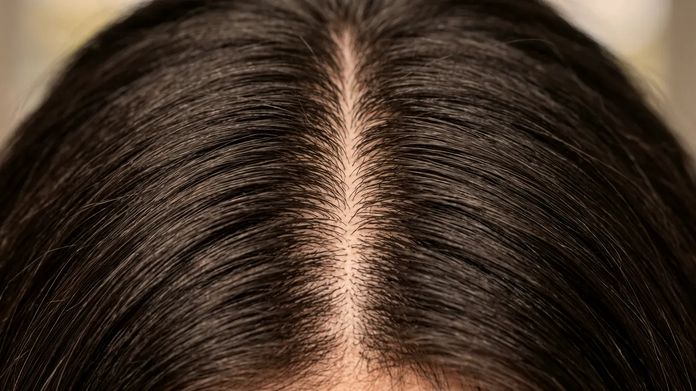

Saç Sağlığı · Mezoterapi
Saç mezoterapisi: saçlı deriye ölçülü destek
Saç mezoterapisinde vitamin, eser element, aminoasit ve düşük yoğunlukta hyalüronik asit içeren bir karışım, ince iğneyle saçlı derinin pek çok noktasına küçük miktarlarda verilir. Hedeflenen, saç kökünü çevreleyen dokunun beslenmesini desteklemektir. Kaybedilmiş saçı geri getirmez; dökülmenin kaynağı araştırılmadan plan yapılmaz, seans sayısı kişiye göre belirlenir.
 Temsilî görsel · yapay zekâ ile üretildi
Temsilî görsel · yapay zekâ ile üretildi
Ne yapar, ne yapmaz
Saç mezoterapisi ne yapar, ne yapamaz?
Saç yakınmasında ilk sorulacak şey uygulamanın adı değil, dökülmenin kaynağıdır. Mezoterapi bu soruyu cevaplamaz; cevap bulunduktan sonra plana eklenip eklenmeyeceği konuşulur.
Karışım kana geçecek derinliğe değil, kıl köklerinin yerleştiği yüzeye yakın deri katmanına bırakılır. Bir seansta kullanılan toplam miktar birkaç mililitreyi aşmaz ve saçlı derinin geniş bir alanına küçük damlalar hâlinde dağıtılır.
İçerik herkes için aynı değildir, hekim tarafından seçilir. Karışımda B grubu vitaminleri, çinko ve bakır gibi iz mineraller, aminoasit–peptit grupları ve hafif yapıda hyalüronik asit bulunabilir. Amaç saçlı derinin nemini, küçük damarlardaki dolaşımı ve kıl kökünü besleyen ortamı desteklemektir.
Karışıma reçeteyle verilen bir ilacın etken maddesi katılmaz; ilaç tedavisi gerekiyorsa bu ayrı bir karar olarak ele alınır. Yaygın dökülmenin ardından gelen toparlanma döneminde, saçlı deride kuruluk ve gerginlik yakınmasında ya da tellerin incelmeye başladığı erken evrede destekleyici bir adım olarak düşünülebilir.
Saç ekmez, kök oluşturmaz: kıl kökünün artık bulunmadığı alanda saç çıkması beklenmez; bu yönde verilecek bir sözün tıbbi dayanağı yoktur.
Dökülmenin kaynağını ortadan kaldırmaz: düşük ferritin ya da demir eksikliği, tiroid hastalıkları, doğum sonrası dönem, yüksek ateşli bir hastalık, sıkı bir diyet ya da bir ilacın yan etkisi tabloyu açıklıyorsa önce bu başlık ele alınır. Saç ekiminin yerini tutmaz: kalıtsal yatkınlıkla geriye çekilen saç çizgisi ve tepede açılma bu uygulamanın hedefi değildir; böyle bir tabloda ilgili uzmanlık dalı önerilir.
Kaşıntı ve kepeklenmeyle seyreden aktif bir saçlı deri hastalığı varsa sıra önce ona gelir. Yüz cildine yapılan mezoterapi ile adı benzese de hedefi ve içeriği farklı bir uygulamadır.
Yol haritası
Seanslar nasıl planlanır, kaç seans gerekir?
Seans sayısını muayeneden önce söylemek mümkün değildir. Herkese aynı seans dizisi uygulanmaz; program her ara kontrolde yanıta bakılarak sürdürülür, değiştirilir ya da bırakılır.
İlk anlamlı değerlendirme
Saç kökünün büyüme döngüsü aylar sürer; birkaç seansın hemen ardından yapılan bir karşılaştırma yanıltıcı olabilir.
Çubuk boyları yalnız karşılaştırma içindir; asıl plan muayenede belirlenir.
- Muayene: dökülmenin ne zaman başladığı, hızı ve dağılımı; saçlı derinin büyütmeli incelenmesi
- Gerekirse kan tetkiki: tam kan sayımı, ferritin, tiroid hormonları, B12 ve D vitamini
- Bilgilendirme ve yazılı onam: neyin amaçlandığı, neyin amaçlanmadığı
- Başlangıç serisi; ara kontrolde yanıtın ölçülmesi ve planın güncellenmesi
"Önce kan tablosu ve öykü, sonra saçlı deri."
Aynı gün işe ve günlük düzene dönülebilir. İlk yarım gün saçlı deri yıkanmaz ve ovalanmaz; bere, şapka ya da sıkı saç bağı kullanılmaz. İki gün boyunca hamam, sauna, havuz, deniz ve çok terleten spor ertelenir; boya ve diğer kimyasal saç işlemleri de bu süreden sonraya bırakılır. Ardından ılık su ve yumuşak bir şampuanla alışılmış yıkamaya geçilir. Önerilerin tamamı size yazılı olarak da verilir.
Sık görülen ve kısa sürenler: iğne noktalarında kızarma ve sızı, saçlı deride bir süre gerilme, taranırken ya da dokunulunca duyarlılık; küçük kabuklar birkaç günde kendiliğinden düşer. Daha az sık: küçük morluklar, geçici baş ağrısı ya da sersemlik hissi, ertesi güne uzanan hafif sızı. Nadir: uygulama bölgesinde enfeksiyon, karışımdaki bir bileşene aşırı duyarlılık, uzun süren kızarık kabarıklıklar.
Uygun olup olmadığınıza muayene ve öykünün ardından karar verilir; bu listeye bakarak kendi kararınızı vermeyin.
Bu durumlarda uygulama yapılmaz:
- Saçlı deride etkin enfeksiyon, iltihaplı sivilce ya da henüz kapanmamış yara
- Karışımdaki bileşenlerden birine karşı daha önce yaşanmış aşırı duyarlılık
- Kontrol altına alınmamış kanama ya da pıhtılaşma bozukluğu
- Gebelik ve emzirme
- Tedavisi süren kanser hastalığı
- Uygulama alanında yeni ortaya çıkmış, henüz tanı konmamış bir lezyon
Ertelenen veya ayrıca planlanan durumlar:
- Kaynağı henüz araştırılmamış dökülme — önce neden ortaya konur
- Kan sulandırıcı ilaç kullanımı
- Ateşli bir hastalık ya da yakın zamanda atlatılmış enfeksiyon
- Dengelenmemiş tiroid hastalığı veya belirgin kansızlık
- Saçlı deride egzamayı andıran aktif bir tablo
- İğneyle ilgili yoğun kaygı ya da daha önce bayılma öyküsü
Karışımlarda vitaminlerin yanında aminoasitler ve koruyucu maddeler de bulunabilir. Daha önce bir ilaç, kozmetik ürün ya da takviye sonrasında tepki yaşadıysanız bunu muayenede mutlaka belirtin.

Temsilî görsel · yapay zekâ ile üretildiSaçlı deride giderek artan ağrı, sıcaklık, akıntı, yayılan kızarıklık ya da ateş ortaya çıkarsa kontrol gününü beklemeden muayenehaneyi arayın. Nefes almada güçlük, yüzde şişme ya da yaygın döküntüyle birlikte baş dönmesi yaşarsanız 112 Acil Çağrı Merkezi’ni arayın ya da en yakın hastanenin acil birimine başvurun.
Bu sayfa genel bilgi vermek amacıyla hazırlanmıştır. Bir uygulamanın size uygun olup olmadığına ancak muayene ve sağlık öykünüz değerlendirildikten sonra karar verilebilir. Girişimsel işlemlerde sonuç önceden taahhüt edilemez; etkinin ne ölçüde görüleceği ve ne kadar süreceği kişiden kişiye değişir. Amacı bir işlemi tanıtmak ya da sizi bir işleme yönlendirmek değildir.
Dökülme türlerini ve olası iç nedenlerini saç dökülmesi sayfasında ele aldık; ilk görüşmede nelerin konuşulduğu hekim muayenesi sayfasındadır. Kimi durumlarda saç PRP ile sırayla ilerleyen ortak bir program düşünülebilir; saçlı derideki eksozom kullanımı kendi sayfasında anlatılır. Bölgeye göre bakış için saçlı deri, uygulamadan sonraki süreç için uygulama sonrası kontrol sayfalarına göz atabilirsiniz.
Sık gelen sorular
Merak ettiğiniz soruya dokunun, yanıtı burada açılsın
Bir adım ötesi
Önce nedeni, sonra planı konuşalım
Saç dökülmesinin kaynağı ortaya konmadan bir uygulama takvimi hazırlanmaz. Cevizlik Mah. Ebuzziya Cad. No:47/1, Bakırköy / İstanbul.
Metni hazırlayan ve tıbbi açıdan gözden geçiren: Uzm. Dr. Rahmi Cebeci (Aile Hekimliği Uzmanı · Medikal Estetik Sertifikalı).
Buradaki anlatım herkese yöneliktir; size özel bir teşhis ya da tedavi planı sunmaz, muayenenin yerini tutmaz. Her uygulamanın etkisi kişiye göre farklı olur.